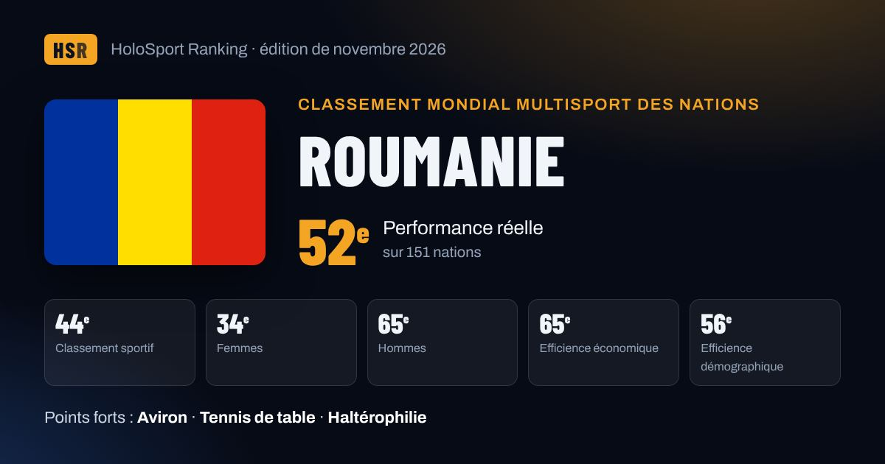

Roumanie au classement mondial multisport
Roumanie est 52e nation mondiale de la performance réelle HSR (novembre 2026) et 44e du classement sportif, tous sports confondus. Points forts : Aviron, Tennis de table, Haltérophilie.

52ePerformance réelle
44eClassement sportif
34eFemmes
65eHommes
65eEfficience économique
56eEfficience démographique
Ses meilleurs sports
Points obtenus sur les 1000 de chaque fédération, et apport au score après pondération par le poids du sport. Score total : 376 points dans 13 sports.
| Sport | Points / 1000 | Apport au score |
|---|---|---|
| Aviron World Rowing | 124,6 | 142,0 |
| Tennis de table ITTF | 31,2 | 80,7 |
| Haltérophilie IWF | 30,2 | 40,0 |
| Sports aquatiques World Aquatics | 13,2 | 29,2 |
| Danse sportive et breaking WDSF | 39,5 | 23,6 |
| Volleyball FIVB | 5,8 | 16,7 |
| Tennis ITF | 6,2 | 13,8 |
| Gymnastique World Gymnastics | 6,7 | 9,8 |